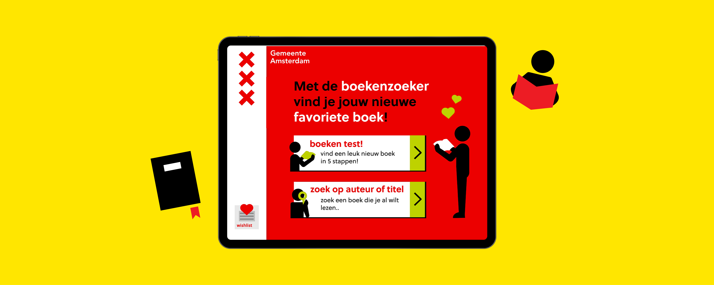

De Boekenzoeker van Amsterdam
Zoek boeken in de bibliotheken van Amsterdam!
-
type
ux/ui design - concept
-
periode
maart 2021
-
opdrachtgever
HvA CMD
Gemeente Amsterdam
Opdracht
Ontwerp een interface voor een iPad Air/Pro in de bibliotheek in de huisstijl van de Gemeente Amsterdam. De gebruiker moet de velen boeken kunnen filteren en vervolgens op kunnen slaan in een verlanglijst. Zo kan hij ze in de bibliotheek vinden!
 Bekijk het Xd prototype!
Bekijk het Xd prototype!
Lo-Fi versie
Low fidelity versie 1 van het design

States schetsen
States in UI-stack (loading, empty, error & zero)
Schermen
Screen designs final versie

App Prototype
Beleef het Xd prototype
De kern van dit project zit in de Visual Design: het gebruiken van de huisstijl van de Gemeente Amsterdam. Hiervoor heb ik onderzoek gedaan naar de belangrijkste elementen, zoals: kleur, tekst (lettertypen, grootte), iconen en het iconische logo.
Iconen in de huisstijl van de Gemeente Amsterdam
Op basis van bestaande iconen heb ik mijn eigen ontworpen voor de toepassing.

Stijlpagina
Alle elementen die je als ontwerper nodig hebt om een nieuw scherm te ontwerpen.

Animaties maakten ook een deel uit van dit project. Animaties maken de user experience leuker en verduidelijken de actie van de gebruiker. Zo krijgt de gebruiker meer feedback van de applicatie.
Boek toevoegen aan wishlist
De kaft vliegt de wishlist in. De gebruiker krijgt een melding en kan vervolgens de actie ongedaan maken.
Boek verwijderen van wishlist
Het verwijderen is een schuddend hartje. Omdat er daarna geen boeken in de wishlist staan, zie je de empty state.
Next Up
Dopper Website HTML/CSS/JS
Replica van de Dopper website from scratch!